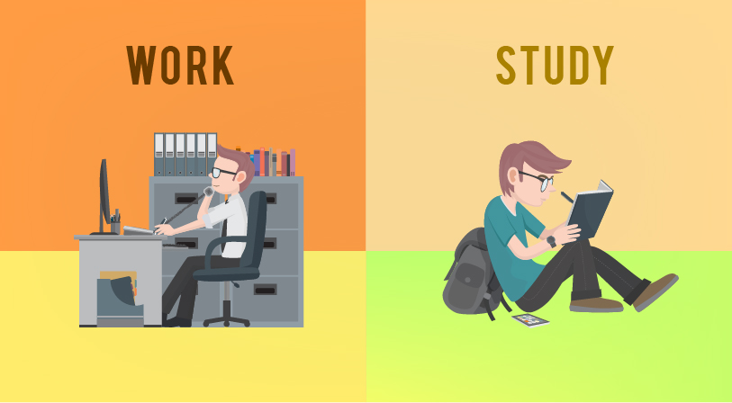
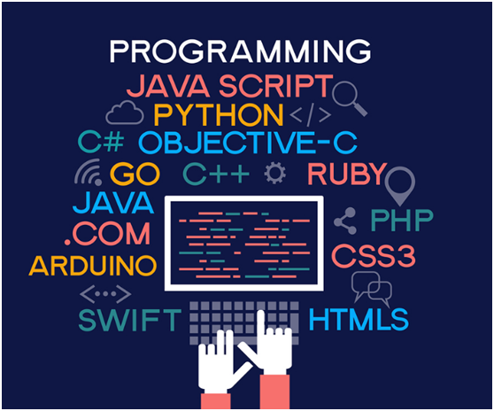

"Keberhasilan tidak datang dari apa yang kita lakukan secara kebetulan, tetapi dari apa yang kita lakukan secara konsisten." - John C. Maxwell
Pengalaman bekerja sambil kuliah membawa tantangan tersendiri. Namun, saya belajar bagaimana cara mengelola waktu dengan lebih efektif. Saya juga belajar banyak keterampilan praktis yang tidak saya dapatkan di dalam kelas. Setiap hari membawa pelajaran baru, dan ini adalah pengalaman yang sangat berharga.
"Jangan takut gagal, karena kegagalan adalah batu loncatan menuju kesuksesan." - Oprah Winfrey
Pemrograman adalah salah satu bidang yang sangat menarik bagi saya. Sejak awal kuliah, saya mulai belajar bahasa pemrograman dan mengembangkan aplikasi kecil seperti kalkulator. Setiap baris kode yang saya tulis memberikan rasa pencapaian, dan dunia coding membuat saya semakin tertarik untuk mendalaminya lebih lanjut.
"Pemrograman adalah seni, bukan hanya ilmu." - Steve Jobs